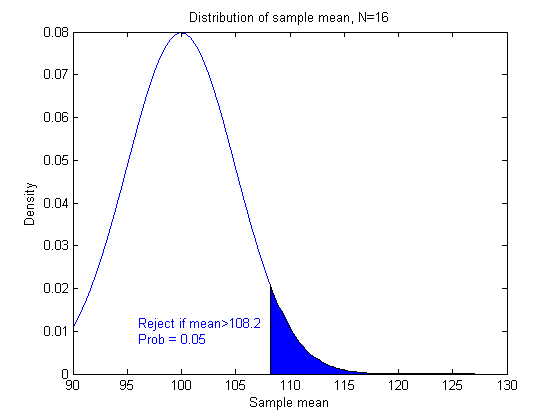
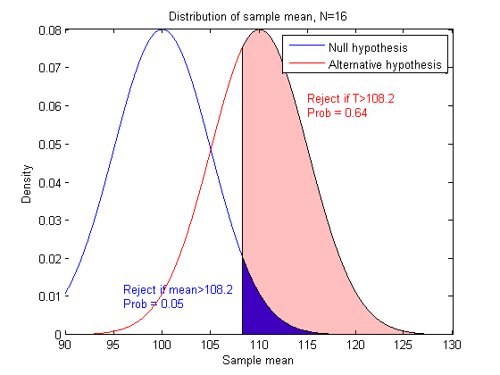
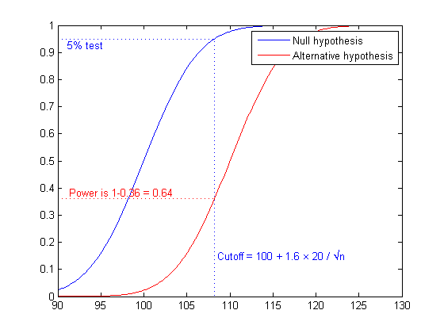
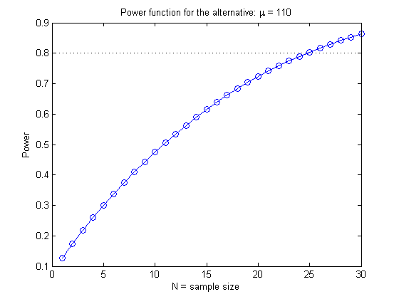
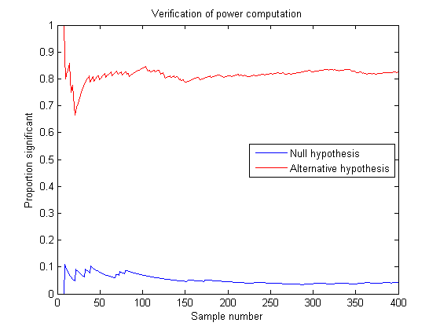
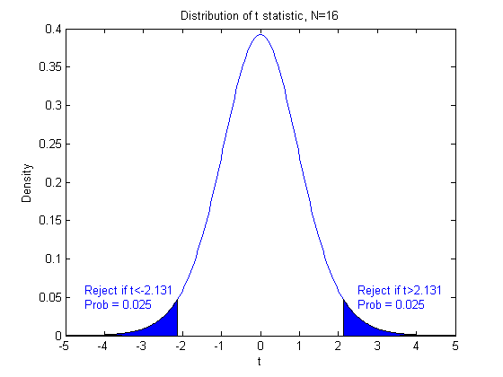
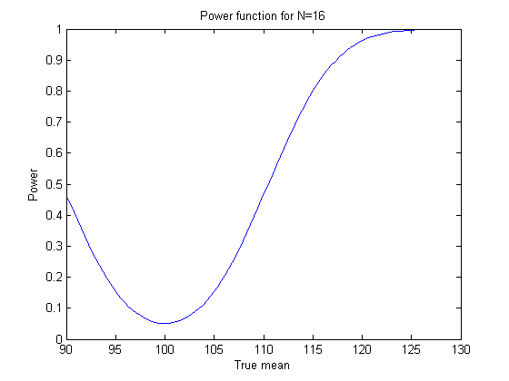
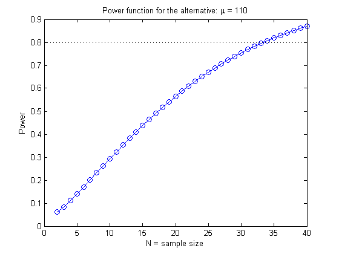
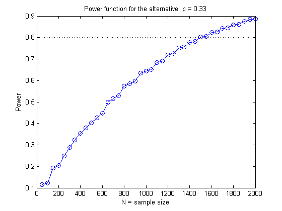
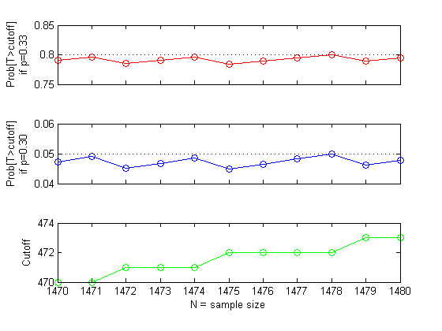

サンプル サイズの選択
「 ... にはどれくらいのサンプルが必要ですか。」これは、統計作業でよく聞かれる質問です。Statistics Toolbox™ には、この質問の答えを得るのに役立つ sampsizepwr という関数が含まれています。
このデモでは、単純な問題に対するサンプル サイズの計算を示した後、関数 sampsizepwr を使用して、2 つのより現実的な問題に対してパワーとサンプル サイズを計算する方法を示します。最後に、関数 sampsizepwr がサポートしていないテストに対し、Statistics Toolbox 関数を使用して必要なサンプル サイズを計算する方法を示します。
目次
既知の標準偏差を使用した正規平均の片側検定
概念を紹介するために、非現実的な単純な例を使用して、平均を検定し、標準偏差を確認してみましょう。データは連続しており、 正規分布を使用してモデル化できます。ここではサンプル サイズ N を判断し、100 の平均と 110 の平均とを区別できるようにする必要があります。標準偏差は 20 であることがわかっています。
統計検定を実施するとき、通常は対立仮説に対して帰無仮説を検定します。検定統計値 T を求め、帰無仮説のもとでその分布を確認します。たとえば帰無仮説が真の場合の発生確率が 5% 未満であるなどの異常な値が見つかった場合は、対立仮説を優先して帰無仮説を棄却します (5% の確率は、検定の有意水準と呼ばれます)。値が異常でない場合、帰無仮説は棄却しません。
この場合、検定統計値 T はサンプル平均です。帰無仮説のもとでは、平均は 100 で、標準偏差は 20/sqrt(N) です。まず、N=16 の固定サンプル サイズを見てみましょう。Tが影の領域、つまり分布の上裾にある場合は、帰無仮説を棄却します。T が下裾にある場合には棄却しないため、これは片側検定になります。この影の領域のカットオフは、平均より上の 1.6 標準偏差になります。
rand('state',0); randn('state',0); mu0 = 100; sig = 20; N = 16; alpha = 0.05; conf = 1-alpha; cutoff = norminv(conf, mu0, sig/sqrt(N)); x = [linspace(90,cutoff), linspace(cutoff,127)]; y = normpdf(x,mu0,sig/sqrt(N)); h1 = plot(x,y); xhi = [cutoff, x(x>=cutoff)]; yhi = [0, y(x>=cutoff)]; patch(xhi,yhi,'b'); title('Distribution of sample mean, N=16'); xlabel('Sample mean'); ylabel('Density'); text(96,.01,sprintf('Reject if mean>%.4g\nProb = 0.05',cutoff),'Color','b');
これは、帰無仮説のものでの T の動作を示していますが、対立仮説のもとではどうでしょうか。対立分布の平均は、赤の曲線で示されるように 110 です。
mu1 = 110; y2 = normpdf(x,mu1,sig/sqrt(N)); h2 = line(x,y2,'Color','r'); yhi = [0, y2(x>=cutoff)]; patch(xhi,yhi,'r','FaceAlpha',0.25); P = 1 - normcdf(cutoff,mu1,sig/sqrt(N)); text(115,.06,sprintf('Reject if T>%.4g\nProb = %.2g',cutoff,P),'Color',[1 0 0]); legend([h1 h2],'Null hypothesis','Alternative hypothesis');
対立仮説が真の場合に帰無仮説を棄却する確率は高くなっています。これは、望むとおりの現象です。確率密度関数 (pdf) ではなく累積分布関数 (cdf) を見てみると、さらにわかりやすくなります。確率は、面積を計算しなくても、グラフから直接読み取ることができます。
ynull = normcdf(x,mu0,sig/sqrt(N)); yalt = normcdf(x,mu1,sig/sqrt(N)); h12 = plot(x,ynull,'b-',x,yalt,'r-'); zval = norminv(conf); cutoff = mu0 + zval * sig / sqrt(N); line([90,cutoff,cutoff],[conf, conf, 0],'LineStyle',':'); msg = sprintf(' Cutoff = 100 + %.2g \\times 20 / \\surd{n}',zval); text(cutoff,.15,msg,'Color','b'); text(min(x),conf,sprintf(' %g%% test',100*alpha),'Color','b',... 'verticalalignment','top') palt = normcdf(cutoff,mu1,sig/sqrt(N)); line([90,cutoff],[palt,palt],'Color','r','LineStyle',':'); text(91,palt+.02,sprintf(' Power is 1-%.2g = %.2g',palt,1-palt),'Color',[1 0 0]); legend(h12,'Null hypothesis','Alternative hypothesis');
このグラフは、N=16 である場合に 2 つの異なる mu 値に対して有意な統計値を得る (帰無仮説を棄却する) 確率を示しています。
べき乗関数は、対立仮説が真の場合に帰無仮説を棄却する確率として定義されています。これは、対立仮説の値とサンプル サイズに依存します。パワー (cdf より 1 を差し引いたもの) を N の関数とし、対立仮説値は 110 に固定してグラフを作成します。 80% のパワーを実現するために、N を選択します。グラフは、約 N=25 が必要であることを示しています。
DesiredPower = 0.80; Nvec = 1:30; cutoff = mu0 + norminv(conf)*sig./sqrt(Nvec); power = 1 - normcdf(cutoff, mu1, sig./sqrt(Nvec)); plot(Nvec,power,'bo-',[0 30],[DesiredPower DesiredPower],'k:'); xlabel('N = sample size'); ylabel('Power') title('Power function for the alternative:\mu = 110')
この非常に単純な例では、必要な値を直接計算して 80% のパワーを得るための公式があります。
mudiff = (mu1 - mu0) / sig; N80 = ceil(((norminv(1-DesiredPower)-norminv(conf)) / mudiff)^2)
N80 =
25
これが機能することを確認するために、モンテ カルロ シミュレーションを行って、平均が 100 の帰無仮説と、平均が 110 の対立仮説のもとで、サイズが 25 のサンプルを 400 個を生成してみましょう。平均が 100 であるかどうかを確認するために各サンプルを検定する場合は、約 5% の最初のグループと約 80% の 2 番目のグループが有意になる必要があります。
nsamples = 400; samplenum = 1:nsamples; N=25; h0 = zeros(1,nsamples); h1 = h0; for j=1:nsamples Z0 = normrnd(mu0,sig,N,1); h0(j) = ztest(Z0,mu0,sig,alpha,'right'); Z1 = normrnd(mu1,sig,N,1); h1(j) = ztest(Z1,mu0,sig,alpha,'right'); end p0 = cumsum(h0) ./ samplenum; p1 = cumsum(h1) ./ samplenum; plot(samplenum,p0,'b-',samplenum,p1,'r-') xlabel('Sample number'); ylabel('Proportion significant') title('Verification of power computation') legend('Null hypothesis','Alternative hypothesis','Location','East')
不明な標準偏差を使用した正規平均の両側検定
次に、標準偏差がわからない場合に、両側検定、つまり、サンプル平均が高すぎるか低すぎるかによって帰無仮説を棄却する検定を実施したいとします。
検定の統計値は t 統計値、つまり、サンプル平均と検定対象の平均の差を平均の標準誤差で割ったものです。帰無仮説のもとでは、これは N-1 の自由度を持つスチューデントの t 分布を含みます。対立仮説のもとでは、分布は、真の平均と検定対象の平均の正規化された差に等しい非心度パラメーターを持つ非心 t 分布になります。
この両側検定に対しては、帰無仮説のもとで、両方の裾に等しい 5% の誤差確率を割り当て、検定統計値がどちらかの方向において極端すぎる場合に棄却する必要があります。また、どの対立仮説のもとでも両方の裾を考慮する必要があります。
N = 16; df = N-1; alpha = 0.05; conf = 1-alpha; cutoff1 = tinv(alpha/2,df); cutoff2 = tinv(1-alpha/2,df); x = [linspace(-5,cutoff1), linspace(cutoff1,cutoff2),linspace(cutoff2,5)]; y = tpdf(x,df); h1 = plot(x,y); xlo = [x(x<=cutoff1),cutoff1]; ylo = [y(x<=cutoff1),0]; xhi = [cutoff2,x(x>=cutoff2)]; yhi = [0, y(x>=cutoff2)]; patch(xlo,ylo,'b'); patch(xhi,yhi,'b'); title('Distribution of t statistic, N=16'); xlabel('t'); ylabel('Density'); text(2.5,.05,sprintf('Reject if t>%.4g\nProb = 0.025',cutoff2),'Color','b'); text(-4.5,.05,sprintf('Reject if t<%.4g\nProb = 0.025',cutoff1),'Color','b');
帰無仮説のみのもとでのべき乗関数と、mu の単一の対立仮説値を調べる代わりに、それを mu の関数として見ることができます。パワーは、mu がどちらかの方向において帰無仮説から遠ざかるにつれて増加します。パワーを計算するには、関数 sampsizepwr を使用できます。パワーの計算には、標準偏差の値を指定する必要があります。これは約 20 になることが予想されます。サンプル サイズ N=16 のべき乗関数の図は次のようになります。
N = 16; x = linspace(90,127); power = sampsizepwr('t',[100 20],x,[],N); plot(x,power); xlabel('True mean') ylabel('Power') title('Power function for N=16')
平均が 110 のときにパワーが 80% になる必要があります。このグラフによると、N=16 のサンプル サイズではパワーは 50% 未満になります。どのサンプル サイズを使用すれば目的のパワーが得られるのでしょうか。
N = sampsizepwr('t',[100 20],110,0.8)
N =
34
約 34 のサンプル サイズが必要です。前の例と比較すると、観測を 9 個追加して両側検定を行い、不明な真の標準偏差を補う必要があります。
べき乗関数のプロットは、さまざまな N の値に対して作成できます。
Nvec = 02:40:00; power = sampsizepwr('t',[100 20],110,[],Nvec); plot(Nvec,power,'bo-',[0 40],[DesiredPower DesiredPower],'k:'); xlabel('N = sample size') ylabel('Power') title('Power function for the alternative:\mu = 110')
そして、前回と同じようなシミュレーションを実行し、必要なパワーが得られるかどうかを確認できます。
nsamples = 400; samplenum = 1:nsamples; N = 34; h0 = zeros(1,nsamples); h1 = h0; for j=1:nsamples Z0 = normrnd(mu0,sig,N,1); h0(j) = ttest(Z0,mu0,alpha); Z1 = normrnd(mu1,sig,N,1); h1(j) = ttest(Z1,mu0,alpha); end p0 = cumsum(h0) ./ samplenum; p1 = cumsum(h1) ./ samplenum; plot(samplenum,p0,'b-',samplenum,p1,'r-') xlabel('Sample number'); ylabel('Proportion significant') title('Verification of power computation') legend('Null hypothesis','Alternative hypothesis','Location','East')

50 のサンプル サイズを用意する余裕があるとします。対立仮説値 mu=110 を検出するためのパワーは 80% より大きくなることが予想されます。80% のパワーを維持する場合は、どのような対立仮説を検出できるでしょうか。
mu1 = sampsizepwr('t',[100 20],[],.8,50)
mu1 = 108.0837
比率の検定
次に、2 つの比率を区別するために必要なサンプル サイズを判断する問題を考えましょう。約 30% の人々が候補者を支持している人口をサンプリングする場合において、この値を 33% とは区別できるだけの十分な数の人々をサンプリングしたいとします。
ここでの観念は、前回と同じです。ここでは、サンプル数を検定統計数として使用できます。この数には二項分布が含まれています。任意のサンプル サイズ N に対して、帰無仮説 P=0.30 を棄却するためのカットオフを計算できます。たとえば N=100 の場合は、サンプル数が以下のように計算されたカットオフ値よりも大きい場合に帰無仮説を棄却します。
N = 100; alpha = 0.05; p0 = 0.30; p1 = 0.33; cutoff = binoinv(1-alpha, N, p0)
cutoff =
38
二項分布は離散分布であるため、複雑さが伴います。カットオフ値を超過する確率は、正確に 5% ではありません。
1 - binocdf(cutoff, N, p0)
ans =
0.0340
ここでも、サンプル サイズの範囲における対立仮説値 P=0.33 に対するパワーを計算しましょう。ここでは 30% より大きい対立仮説値のみに注目する必要があるため、片側 (右裾) 検定を使用します。
Nvec = 50:50:2000; power = sampsizepwr('p',p0,p1,[],Nvec,'tail','right'); plot(Nvec,power,'bo-',[0 2000],[DesiredPower DesiredPower],'k:'); xlabel('N = sample size') ylabel('Power') title('Power function for the alternative:p = 0.33')
関数 sampsizepwr を使用して、80% のパワーに必要なサンプル サイズを要求します。
approxN = sampsizepwr('p',p0,p1,0.80,[],'tail','right')
警告:Values N>200 are approximate.Plotting the power as a function
of N may reveal lower N values that have the required power.
approxN =
1500
警告メッセージにより、回答は近似であることが伝えられます。異なるサンプル サイズに対してべき乗関数を見てみると、二項分布は離散であるため、関数は一般的に増加しますが、不規則であることがわかります。1470 ～ 1480 のサンプル サイズ範囲において、p=0.30 および p=0.33 の両方に対して帰無仮説を棄却する確率を見てみましょう。
subplot(3,1,1); Nvec = 1470:1480; power = sampsizepwr('p',p0,p1,[],Nvec,'tail','right'); plot(Nvec,power,'ro-',[min(Nvec),max(Nvec)],[DesiredPower DesiredPower],'k:'); ylabel(sprintf('Prob[T>cutoff]\nif p=0.33')) set(gca,'xticklabel','') subplot(3,1,2); alf = sampsizepwr('p',p0,p0,[],Nvec,'tail','right'); plot(Nvec,alf,'bo-',[min(Nvec),max(Nvec)],[alpha alpha],'k:'); ylabel(sprintf('Prob[T>cutoff]\nif p=0.30')) set(gca,'xticklabel','') subplot(3,1,3); cutoff = binoinv(1-alpha, Nvec, p0); plot(Nvec,cutoff,'go-'); xlabel('N = sample size') ylabel('Cutoff')
このプロットは、べき乗関数の曲線 (上部のプロット) が不規則なだけでなく、一部のサンプル サイズで減少していることを示しています。これらのサンプル サイズでは、5% 以下の有意水準 (中央のプロット) を保持するためにカットオフ値 (下部のプロット) を増加する必要があります。この範囲内で、目的の 80% のパワーを提供するより小さいサンプル サイズを見つけることができます。
min(Nvec(power>=0.80))
ans =
1478
相関の検定
これまでに検討した例では、特定の有意レベルを達成するための検定統計値のカットオフを求め、対立仮説のもとでそのカットオフを超える確率を計算することができました。最後の例では、少し難しい問題を考えてみましょう。
2 つの変数 X および Y からのサンプルを使用する場合に、これらが相関していないか、あるいは相関が最高で 0.4 にも及ぶことがあるかを検査するために必要なサンプル サイズを知りたいとします。サンプルの相関の分布を t 分布に変換することで解を得ることは可能ですが、検定統計値の分布に対処できない問題においても使用できる方法を採用してみましょう。
任意のサンプル サイズに対してモンテ カルロ シミュレーションを使用すると、相関の検定に適したカットオフ値を判断できます。大きなシミュレーションを実行してこの値を正確に求めてみましょう。まず、25 のサンプル サイズから始めます。
nsamples = 10000; N = 25; alpha = 0.05; conf = 1-alpha; r = zeros(1,nsamples); for j=1:nsamples xy = normrnd(0,1,N,2); r(j) = corr(xy(:,1),xy(:,2)); end cutoff = quantile(r,conf)
cutoff =
0.3382
次に、対立仮説のもとでサンプルを生成し、検定のパワーを推定します。
nsamples = 1000; mu = [0; 0]; sig = [1 0.4; 0.4 1]; r = zeros(1,nsamples); for j=1:nsamples xy = mvnrnd(mu,sig,N); r(j) = corr(xy(:,1),xy(:,2)); end [power,powerci] = binofit(sum(r>cutoff),nsamples)
power =
0.6490
powerci =
0.6185 0.6786
パワーは 65% であると推定し、真の値が 62% ～ 68% の範囲内にある信頼率は 95% とします。80% のパワーを得るには、より大きなサンプル サイズが必要です。N を 50 に増加し、このサンプル サイズのカットオフ値を推定して、パワー シミュレーションを繰り返すことができます。
nsamples = 10000; N = 50; alpha = 0.05; conf = 1-alpha; r = zeros(1,nsamples); for j=1:nsamples xy = normrnd(0,1,N,2); r(j) = corr(xy(:,1),xy(:,2)); end cutoff = quantile(r,conf) nsamples = 1000; mu = [0; 0]; sig = [1 0.4; 0.4 1]; r = zeros(1,nsamples); for j=1:nsamples xy = mvnrnd(mu,sig,N); r(j) = corr(xy(:,1),xy(:,2)); end [power,powerci] = binofit(sum(r>cutoff),nsamples)
cutoff =
0.2387
power =
0.8990
powerci =
0.8786 0.9170
このサンプル サイズでは、80% の目標を上回るパワーが得られます。このようにして試行錯誤を繰り返すと、ここでの要件を満たす 50 未満のサンプル サイズを見つけることができます。
まとめ
Statistics Toolbox の確率関数を使用すると、仮説検定における目的のパワー レベルの実現に必要なサンプル サイズを判断できます。問題によっては、サンプル サイズを直接計算できる場合と、正しい値が見つかるまでサンプル サイズの範囲を探し求める必要が生じる場合があります。乱数発生器は、目的のパワーが満たされているかどうかを確認するのに役立ちます。また、対立条件下で特定の検定のパワーを調べるためにも使用できます。